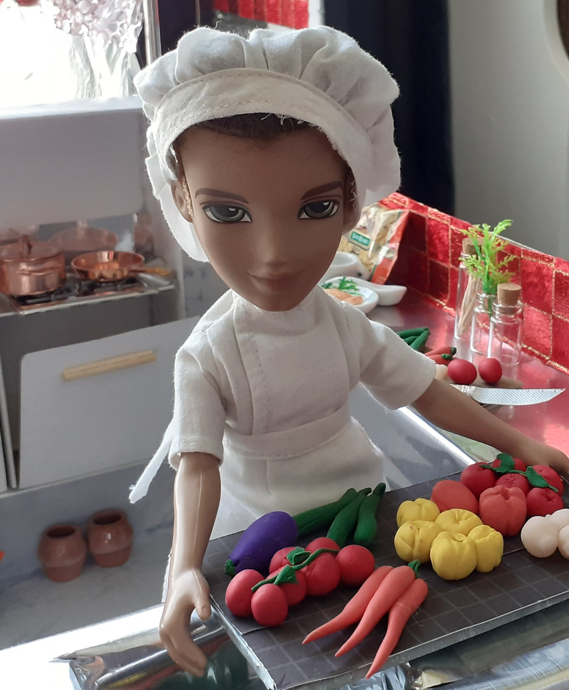

Fleur loves to help Remy in the kitchen.
Her passion is patisserie; French desserts of a very high quality made to an exacting standard.
(slide the pink circle to see both photos)
Remy uses only ingredients bought fresh each day at the local market.
Ratatouille is his signature dish.
Remy is classically trained, but he likes best to cook in the French Country Style. He loves to cook with his daughter Fleur.
Fleur's dream is to be trained by an expert pâtissière.
(usee the pink magnifying glass to see more detail)